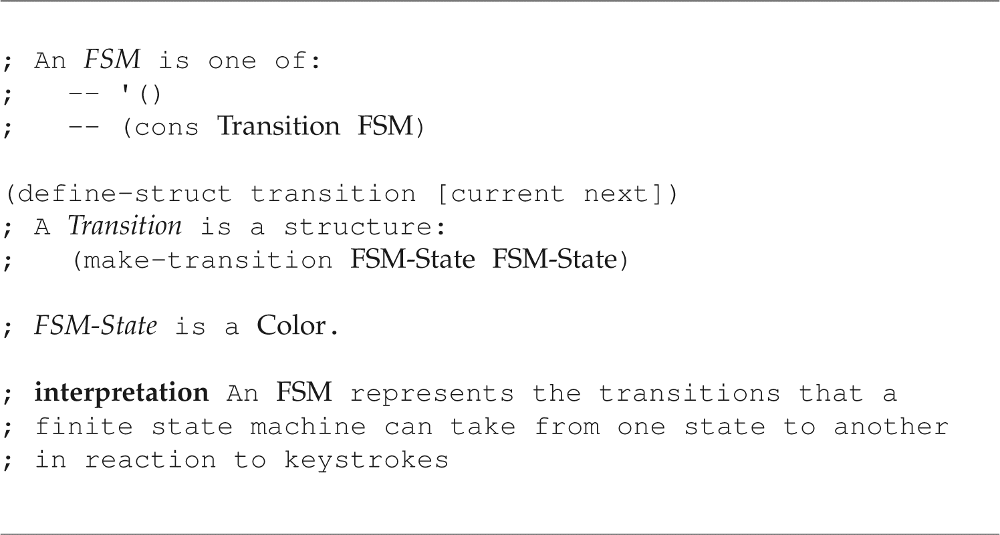
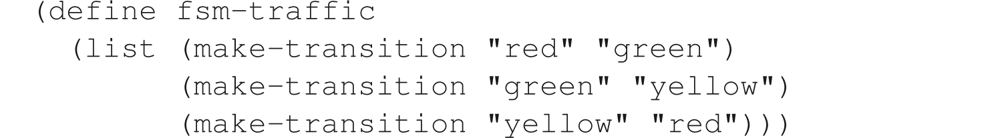
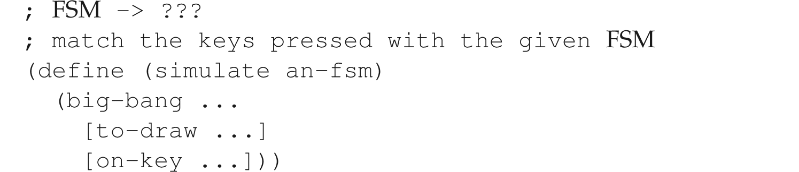
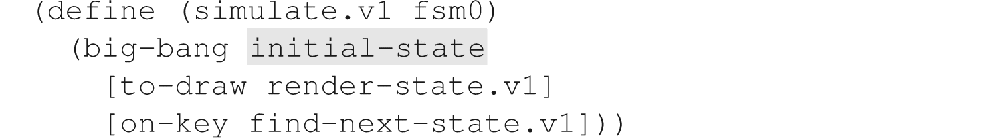
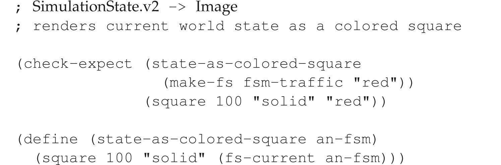
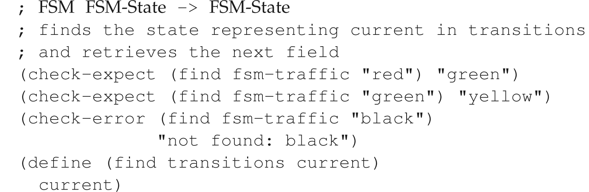

12.8 Finite State Machines
Finite state machines (FSMs) and regular expressions are ubiquitous elements of programming. As chapter 4.7 explains, state machines are one way to think about world programs. Conversely, exercise 109 shows how to design world programs that implement an FSM and check whether a player presses a specific series of keystrokes.
As you may also recall, a finite state machine is equivalent to a regular expression. Hence, computer scientists tend to say that an FSM accepts the keystrokes that match a particular regular expression, like this one
from exercise 109. If you wanted a program that recognizes a different pattern, say,
you would just modify the existing program appropriately. The two programs would resemble each other, and if you were to repeat this exercise for several different regular expressions, you would end up with a whole bunch of similar-looking programs.
A natural idea is to look for a general solution, that is, a world program that consumes a data representation of an FSM and recognizes whether a player presses a matching sequence of keys. This section presents the design of just such a world program, though a greatly simplified one. In particular, the FSMs come without initial or final states, and the matching ignores the actual keystrokes; instead the transition from one state to another takes place whenever any key is pressed. Furthermore, we require that the states are color strings. That way, the FSM-interpreting program can simply display the current state as a color.
Note on Design Choices Here is another attempt to generalize:
Sample Problem Design a program that interprets a given FSM on a specific list of KeyEvents. That is, the program consumes a data representation of an FSM and a string. Its result is #true if the string matches the regular expression that corresponds to the FSM; otherwise it is #false.
As it turns out, however, you cannot design this program with the principles of the first two parts. Indeed, solving this problem has to wait until chapter 30; see exercise 476. End
The simplified problem statement dictates a number of points, including the need for a data definition for the representation of FSMs, the nature of its states, and their appearance as an image. Figure 82 collects this information. It starts with a data definition for FSMs. As you can see, an FSM is just a list of Transitions. We must use a list because we want our world program to work with any FSM and that means a finite, but arbitrarily large, number of states. Each Transition combines two states in a structure: the current state and the next state, that is, the one that the machine transitions to when the player presses a key. The final part of the data definition says that a state is just the name of a color.

Figure 82: Representing and interpreting finite state machines in general
Exercise 226. Design state=?, an equality predicate for states. 
Since this definition is complex, we follow the design recipe and create an example:

You probably guessed that this transition table describes a traffic light. Its first transition tells us that the traffic light jumps from "red" to "green", the second one represents the transition from "green" to "yellow", and the last one is for "yellow" to "red".
Exercise 227. The BW Machine is an FSM that flips from black to white and back to black for every key event. Formulate a data representation for the BW Machine.
Clearly, the solution to our problem is a world program:

It is supposed to consume a FSM, but we have no clue what the program is to produce. We call the program simulate because it acts like the given FSM in response to a player’s keystrokes.
Let’s follow the design recipe for world programs anyway to see how far it takes us. It tells us to differentiate between those things in the “real world” that change and those that remain the same. While the simulate function consumes an instance of FSM, we also know that this FSM does not change. What changes is the current state of the machine.
This analysis suggests the following data definition
; A SimulationState.v1 is an FSM-State.
The empty-image constant represents an “invisible” image. It is a good default value for writing down the headers of rendering functions.
According to the design recipe for world programs, this data definition completes the main function:

and implies a wish list with two entries:
; SimulationState.v1 -> Image
; renders a world state as an image
(define (render-state.v1 s)
empty-image)
; SimulationState.v1 KeyEvent -> SimulationState.v1
; finds the next state from ke and cs
(define (find-next-state.v1 cs ke)
cs)
The sketch raises two questions. First, there is the issue of how the very first SimulationState.v1 is determined. Currently, the chosen state, initial-state, is marked in grey to warn you about the issue. Second, the second entry on the wish list must cause some consternation:
How can find-next-state possibly find the next state when all it is given is the current state and a keystroke?
This question rings especially true because, according to the simplified problem statement, the exact nature of the keystroke is irrelevant; the FSM transitions to the next state regardless of which key is pressed.
What this second issue exposes is a fundamental limitation of BSL+. To appreciate this limitation, we start with a work-around. Basically, the analysis demands that the find-next-state function receives not only the current state but also the FSM so that it can search the list of transitions and pick the next state. In other words, the state of the world must include both the current state of the FSM and the FSM itself:
(define-struct fs [fsm current])
; A SimulationState.v2 is a structure:
; (make-fs FSM FSM-State)
Alonzo Church and Alan Turing, the first two computer scientists, proved in the 1930s that all programming languages can compute certain functions on numbers. Hence, they argued that all programming languages were equal. The first author of this book disagrees. He distinguishes languages according to how they allow programmers to express solutions.
According to the world design recipe, this change also means that the key-event handler must return this combination:
; SimulationState.v2 -> Image
; renders a world state as an image
(define (render-state.v2 s)
empty-image)
; SimulationState.v2 KeyEvent -> SimulationState.v2
; finds the next state from ke and cs
(define (find-next-state.v2 cs ke)
cs)
Finally, the main function must now consume two arguments: the FSM and its first state. After all, the various FSMs that simulate consumes come with all kinds of states; we cannot assume that all of them have the same initial state. Here is the revised function header:
; FSM FSM-State -> SimulationState.v2
; match the keys pressed with the given FSM
(define (simulate.v2 an-fsm s0)
(big-bang (make-fs an-fsm s0)
[to-draw state-as-colored-square]
[on-key find-next-state]))
Let’s return to the example of the traffic-light FSM. For this machine, it would be best to apply simulate to the machine and "red":
(simulate.v2 fsm-traffic "red")
Stop! Why do you think "red" is good for traffic lights?
Engineers call "red" the safe state.
Note on Expressive Power Given the work-around, we can now explain the limitation of BSL. Even though the given FSM does not change during the course of the simulation, its description must become a part of the world’s state. Ideally, the program should express that the description of the FSM remains constant, but instead the program must treat the FSM as part of the ever-changing state. The reader of a program cannot deduce this fact from the first piece of big-bang alone.
The next part of the book resolves this conundrum with the introduction of a new programming language and a specific linguistic construct: ISL and local definitions. For details, see chapter 16.3. End
At this point, we can turn to the wish list and work through its entries, one at a time. The first one, the design of state-as-colored-square, is so straightforward that we simply provide the complete definition:

In contrast, the design of the key-event handler deserves some discussion. Recall the header material:
; SimulationState.v2 KeyEvent -> SimulationState.v2
; finds the next state from ke and cs
(define (find-next-state an-fsm current)
an-fsm)
According to the design recipe, the handler must consume a state of the world and a KeyEvent, and it must produce the next state of the world. This articulation of the signature in plain words also guides the design of examples. Here are the first two:
(check-expect
(find-next-state (make-fs fsm-traffic "red") "n")
(make-fs fsm-traffic "green"))
(check-expect
(find-next-state (make-fs fsm-traffic "red") "a")
(make-fs fsm-traffic "green"))
The examples say that when the current state combines the fsm-traffic machine and its "red" state, the result combines the same FSM with "green", regardless of whether the player hit "n" or "a" on the keyboard. Here is one more example:
(check-expect
(find-next-state (make-fs fsm-traffic "green") "q")
(make-fs fsm-traffic "yellow"))
Interpret the example before reading on. Can you think of another one?
Since the function consumes a structure, we write down a template for structures processing:
(define (find-next-state an-fsm ke)
(… (fs-fsm an-fsm) .. (fs-current an-fsm) …))
Furthermore, because the desired result is a SimulationState.v2, we can refine the template with the addition of an appropriate constructor:
(define (find-next-state an-fsm ke)
(make-fs
… (fs-fsm an-fsm) … (fs-current an-fsm) …))
The examples suggest that the extracted FSM becomes the first component of the new SimulationState.v2 and that the function really just needs to compute the next state from the current one and the list of Transitions that make up the given FSM. Because the latter is arbitrarily long, we make up a wish—a find function that traverses the list to look for a Transition whose current state is (fs-current an-fsm)—and finish the definition:
(define (find-next-state an-fsm ke)
(make-fs
(fs-fsm an-fsm)
(find (fs-fsm an-fsm) (fs-current an-fsm))))
Here is the formulation of the new wish:

The examples are derived from the examples for find-next-state.
Stop! Develop some additional examples, then tackle the exercises.
Exercise 228. Complete the design of find.
Once the auxiliary functions are tested, use simulate to play with fsm-traffic and the BW Machine from exercise 227.
Our simulation program is intentionally quite restrictive. In particular, you cannot use it to represent FSMs that transition from one state to another depending on which key a player presses. Given the systematic design, though, you can extend the program with such capabilities.
Exercise 229. Here is a revised data definition for Transition:
(define-struct ktransition [current key next])
; A Transition.v2 is a structure:
; (make-ktransition FSM-State KeyEvent FSM-State)
Represent the FSM from Transition.v2s; ignore errors and final states.
Modify the design of simulate so that it deals with keystrokes in the appropriate manner now. Follow the design recipe, starting with the adaptation of the data examples.
Use the revised program to simulate a run of the FSM from exercise 109 on the following sequence of keystrokes: "a", "b", "b", "c", and "d".
Finite state machines do come with initial and final states. When a program that “runs” an FSM reaches a final state, it should stop. The final exercise revises the data representation of FSMs one more time to introduce these ideas.
Exercise 230. Consider the following data representation for FSMs:
(define-struct fsm [initial transitions final])
(define-struct transition [current key next])
; An FSM.v2 is a structure:
; (make-fsm FSM-State LOT FSM-State)
; A LOT is one of:
; -- '()
; -- (cons Transition.v3 LOT)
; A Transition.v3 is a structure:
; (make-transition FSM-State KeyEvent FSM-State)
Represent the FSM from exercise 109 in this context.
Design the function fsm-simulate, which accepts an FSM.v2 and runs it on a player’s keystrokes. If the sequence of keystrokes forces the FSM.v2 to reach a final state, fsm-simulate stops. Hint The function uses the initial field of the given fsm structure to track the current state.
Note on Iterative Refinement These last two projects introduce the notion of “design by iterative refinement.” The basic idea is that the first program implements only a fraction of the desired behavior, the next one a bit more, and so on. Eventually you end up with a program that exhibits all of the desired behavior, or at least enough of it to satisfy a customer. For more details, see chapter 20. End